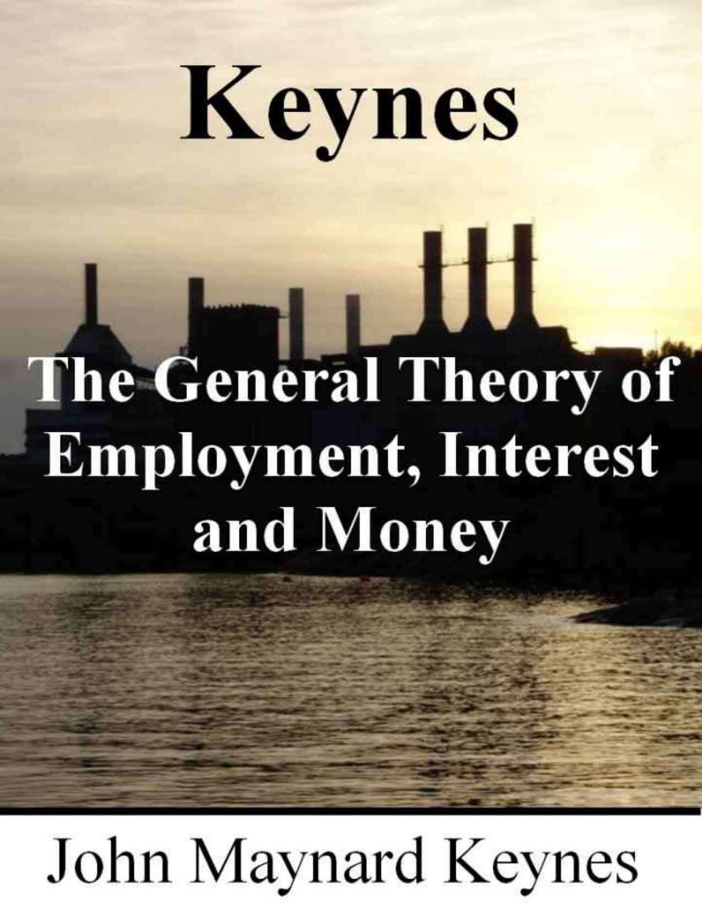

John Maynard Keynes · 1936 · 662 pages
The opening is a declaration of war against the entire edifice of classical economics. The title itself is a polemic: he calls his work a "general" theory to emphasize that the orthodox economics taught in universities since Ricardo is merely a "special case" applicable only when the economy happens to be at full employment — a condition Keynes regards as the rare exception, not the rule. The classical postulates, he argues, describe a limiting point of equilibrium that does not match the actual economic society in which we live.
The term "classical economists" is deliberately expansive. Originally coined by Marx to describe Ricardo and James Mill, it extends to encompass the entire mainstream tradition: J.S. Mill, Marshall, Edgeworth, and Pigou. By lumping them all together, he signals that his quarrel is not with individual thinkers but with a century of shared assumptions. Most classical treatises, he notes, focus on how a given volume of employed resources gets distributed among different uses, while the more fundamental question — what determines the total volume of employment — is treated as so obvious it barely merits discussion.
This chapter is barely three pages long, but it functions as a thesis statement for the entire book. Keynes is telling the reader: everything you think you know about how economies work rests on premises that are seldom satisfied in practice. The classical teaching is not just incomplete but "misleading and disastrous" when applied to the real world. The rest of the book will construct an alternative framework in which involuntary unemployment is not an anomaly but a predictable consequence of how modern economies actually function.
The brevity is itself a rhetorical choice. Keynes does not waste time with preliminaries. He plants his flag and moves immediately to dismantle the foundations of the orthodoxy he is challenging. The reader is put on notice that this will be, as Keynes later says:
“A struggle of escape from habitual modes of thought and expression.”
Two fundamental postulates underpin which the classical theory of employment rests. The first — that the wage equals the marginal product of labor — he accepts. The second — that the utility of the wage equals the marginal disutility of employment — he rejects. This second postulate implies that workers can always choose to work or not based on real wages, which in turn means that all unemployment is either "frictional" (workers between jobs) or "voluntary" (workers refusing the going wage). The classical framework simply has no room for involuntary unemployment.
The demolition starts with a simple observation about how labor markets actually work. Workers bargain for money-wages, not real wages. They resist cuts to their money-wages fiercely, but they do not withdraw their labor when prices rise and their real wages fall. Statistically, when money- wages are rising, real wages are almost always falling, and vice versa. This asymmetry is fatal to the classical argument, because it means the labor supply is not a simple function of real wages. Workers care about their relative position among labor groups, not their absolute real wage.
The evidence from the Great Depression makes the classical position absurd. It is not plausible that the mass unemployment of 1932 America was caused by workers obstinately refusing reasonable wage offers. Wide variations in employment occur without any apparent change in workers' real demands or their productivity. Something else entirely is determining the volume of employment.
A memorable analogy captures the problem: the classical economists are like Euclidean geometers living in a non-Euclidean world. When they discover that parallel lines appear to meet, they do not question their axioms — they rebuke the lines for not keeping straight. Similarly, when confronted with mass involuntary unemployment, classical economists do not question their postulates but blame workers for being insufficiently flexible. The solution is to "throw over the axiom of parallels" and build a new system where involuntary unemployment is theoretically possible.
He formally defines involuntary unemployment: men are involuntarily unemployed if a small rise in the price of goods relative to money-wages would cause both labor supply and labor demand to exceed existing employment. Full employment, then, is simply the absence of involuntary unemployment. Classical theory is best understood as a theory of distribution under conditions of full employment — useful in that special case but dangerously misleading as a general account of how economies work.
The chapter closes by identifying Say's Law — "supply creates its own demand" — as the hidden axiom holding the entire classical edifice together. J.S. Mill stated it plainly: all sellers are inevitably buyers. Marshall maintained that saving is just another form of spending. This rests on a "false analogy" from a Robinson Crusoe economy. In a monetary economy, the decision to save and the decision to invest are made by different people for entirely different reasons, with no mechanism ensuring they balance at full employment.
This chapter introduces the concept that will reshape economics: effective demand. He defines two functions — the aggregate supply function Z = φ(N) relating employment to the minimum proceeds entrepreneurs need, and the aggregate demand function D = f(N) relating employment to what entrepreneurs expect to receive. Employment is determined at their intersection, the "point of effective demand." This, Keynes states flatly, "is the substance of the General Theory of Employment."
The argument unfolds through eight propositions. Income depends on employment. Consumption depends on income through the "propensity to consume." Total demand equals consumption plus investment. The critical insight is the "fundamental psychological law": when income increases, consumption increases too, but not by as much. This means that as employment grows, a widening gap opens between what the economy produces and what consumers spend. Unless investment fills that gap, the economy cannot sustain full employment.
This creates a bitter paradox. A poor community that consumes most of its output needs only modest investment to achieve full employment. A wealthy community must find enormous investment opportunities or face chronic unemployment. The richer a society becomes, the wider the gap between its actual and potential output — the greater the challenge of maintaining demand sufficient for everyone who wants to work.
Three gaps in knowledge must be filled by the rest of the book: the analysis of the propensity to consume, the definition of the marginal efficiency of capital, and the theory of the rate of interest. These three independent variables, together with the quantity of money, determine the volume of employment.
The chapter contains one of Keynes's most famous historical observations: that Ricardo's victory over Malthus on precisely this question buried the concept of effective demand for a century. Ricardo:
“Conquered England as completely as the Holy Inquisition conquered Spain.”
Malthus had argued that insufficient demand could limit growth, but he could not furnish a coherent alternative theory, and the concept "ceased to be discussed" in respectable economics. It could only survive in the "underworlds" of Karl Marx, Silvio Gesell, or Major Douglas.
Ricardo's victory is explained not by the strength of his arguments but by their appeal. Classical economics gave intellectual prestige to conclusions different from the common person's. Its austere practice lent it moral virtue. Its logical superstructure gave it mathematical beauty. And it explained social injustice as an inevitable incident of progress, justifying the free activities of individual capitalists. The result was a "signal failure for scientific prediction" and a growing unwillingness to accord economists the respect they claimed.
Before building the theoretical apparatus, a fundamental problem of measurement. Classical economics relies on aggregate concepts like "national dividend" and "general price level" that are hopelessly vague. The national dividend is a non-homogeneous complex of goods and services that cannot be meaningfully measured except in special cases. Comparing new and old equipment to calculate net output is an impossible task. "Our precision will be a mock precision... if we try to use such partly vague and non-quantitative concepts as the basis of a quantitative analysis."
His solution is elegant in its simplicity. He proposes two fundamental units: quantities of money-value (which are strictly homogeneous) and quantities of employment (which can be made approximately homogeneous). The "labor-unit" is defined as one hour of ordinary labor, and the "wage-unit" as the money-wage paid for one such unit. If E represents the total wages bill, W the wage-unit, and N the volume of employment, then E = N × W. Special labor is weighted in proportion to its remuneration.
This chapter may seem like dry methodological groundwork, but it serves a crucial purpose. By anchoring his analysis in employment rather than output, Keynes sidesteps the measurement problems that plague classical aggregates. It also reinforces his central thesis: what matters is not the total value of production but the number of people who have jobs. The choice of units is itself a theoretical statement about what economics should be concerned with.
The chapter also reveals Keynes's philosophical temperament. He is suspicious of false precision, of mathematical formalism that obscures rather than illuminates. He prefers to be roughly right rather than precisely wrong — a methodological principle that runs through the entire General Theory and distinguishes it from the highly formalized economics that would follow.
A distinction that will prove central to his theory: the difference between short-term and long-term expectations. Short-term expectations concern the price a producer expects to receive for finished output when committing to current production. Long-term expectations concern the future returns from purchasing or manufacturing capital equipment. All production ultimately satisfies a consumer, but time elapses between incurring costs and final purchase — and in that interval, expectations do all the work.
The critical insight is that employment depends on expectations, not on actually realized results. Realized results matter only insofar as they modify subsequent expectations. A change in expectations produces its full employment effect only over a considerable period, and in the meantime the economy is always occupied with overlapping activities from various past states of expectation. This creates a built-in source of cyclical movement: mere changes in expectation can produce oscillations of the same shape as business cycles, even without any change in underlying productive capacity.
Short-term expectations are revised gradually and continuously, generally based on recently realized results. Producers assume current conditions will persist unless they have specific reasons to expect change. This makes short-term expectations relatively predictable and allows Keynes to treat them as given for most of his analysis. Long-term expectations, by contrast, are liable to sudden and dramatic revision. They cannot be approximated by recent results, and it is their volatility that drives the investment fluctuations at the heart of business cycles.
The chapter establishes a framework that separates Keynes decisively from the classical tradition. Classical economics assumed that production and employment are determined by objective conditions — technology, resources, preferences. Instead, they are determined by subjective states of mind about an unknowable future. This shift from objective to subjective determinants is perhaps the deepest intellectual revolution in the General Theory.
This chapter establishes precise definitions of income, saving, and investment — and to proving that saving and investment are necessarily and identically equal. This is not an equilibrium condition that holds only under special circumstances; it is an accounting identity that holds by definition at all times. Saving is simply the excess of income over consumption. Investment is the addition to capital equipment. Since income equals consumption plus investment, it follows immediately that saving equals investment.
The definitions require careful attention. An entrepreneur sells output for a value A, purchases inputs worth A1 from other entrepreneurs, and begins with equipment worth G. "User cost" (U) is the sacrifice of equipment value from producing output rather than leaving equipment idle. Income equals A minus U, and it is "completely unambiguous." Supplementary cost (V) covers expected depreciation beyond user cost — normal obsolescence that can be foreseen in the large if not in detail. Net income equals A minus U minus V. Windfall losses from unforeseen events are charged to the capital account.
The definition of net income is very close to Marshall's, who ultimately took refuge in the practices of the Income Tax Commissioners rather than attempting a purely theoretical definition. The resemblance to Pigou's most recent definition of national dividend is also noted. Against Hayek's suggestion that capital owners might aim to keep their income constant, Keynes replies tartly: "I doubt if such an individual exists."
The identity of saving and investment emerges from the "bilateral character of transactions." No one can save without acquiring an asset — whether cash, a debt claim, or a capital good. No one can acquire an asset without it being newly produced or someone else parting with it. When a bank creates credit that finances additional investment, incomes necessarily increase, and the resulting savings are "just as genuine as any other savings." An individual's attempt to save more by consuming less affects other people's incomes, potentially defeating the very purpose. It is impossible for the community as a whole to save less than the amount of current investment; any attempt to do so raises incomes until chosen savings exactly equal investment.
This seemingly dry accounting exercise has revolutionary implications. If saving and investment are always equal by definition, then the interest rate cannot be the price that equilibrates them. Something else must determine the rate of interest, and something else must explain why economies sometimes have too little investment relative to what full employment would require. Keynes has cleared the ground for his theory of liquidity preference.
This chapter is largely a cleanup operation, correcting definitions from the earlier Treatise on Money that had caused "considerable confusion," engages with critics, and addresses the muddled concept of "forced saving." In the Treatise, Keynes had defined income as "normal profit" rather than realized profit, which meant that an excess of saving over investment corresponded to entrepreneurs earning below normal profit. He now acknowledges this was unclear and abandons those definitions "with much regret for the confusion which they have caused."
He takes up Hawtrey's critique, which emphasizes changes in "liquid capital" — undesigned accumulations of unsold goods. Keynes prefers to focus on the total change in effective demand rather than just unsold stock changes, arguing that Hawtrey's method cannot handle unused capacity equally well. Robertson's alternative framework, where today's income equals yesterday's consumption plus investment, is acknowledged as attempting the same vital distinction between effective demand and income, though by different definitions.
The concept of "forced saving" receives particularly sharp treatment. The idea originates with Bentham's "forced frugality" — what happens when the money supply increases under full employment. Real income cannot increase, so additional investment must come at the expense of consumption. But Hayek and Robbins use the term without any definite relation to this original meaning, and extending it to conditions of less than full employment "requires explanation or qualification" that modern writers have carelessly overlooked.
The chapter functions as Keynes wrestling with his own intellectual evolution in public. He is honest about where he went wrong before, precise about how his thinking has changed, and generous in acknowledging the partial insights of contemporaries even as he explains where they fell short. It demonstrates that the General Theory was not born fully formed but emerged from years of grappling with problems that had no clean solutions.
The first of the three independent variables: the propensity to consume. He defines it as the functional relationship between income (measured in wage-units) and consumption: Cw = χ(Yw). Subjective factors — psychology, habits, institutions — change slowly enough to treat as given. What drives short-period changes are six objective factors: changes in the wage-unit, differences between income and net income, windfall capital-value changes, the rate of time-discounting, fiscal policy, and expectations of future income.
The heart of the chapter is the "fundamental psychological law": men are disposed, as a rule and on the average, to increase their consumption as their income increases, but not by as much as the increase in their income. The marginal propensity to consume is positive but less than unity. This means that as income rises, the gap between income and consumption widens, and employment can only increase if investment grows to fill that gap.
The U.S. crash of 1929 illustrates the point. The rapid capital expansion of the previous five years had created enormous sinking funds and depreciation allowances. The plant was so huge that enormous new investment was required merely to absorb these financial provisions, never mind providing for the savings of a wealthy community at full employment. This factor alone was "probably sufficient to cause a slump." The continuing practice of "financial prudence" through the Depression then created a serious obstacle to early recovery.
The British housing boom provides a parallel example. Substantial house-building since the war had created sinking funds exceeding current repair needs. Local authority sinking funds represented more than fifty percent of amounts spent on new developments. The Ministry of Health's insistence on stiff sinking funds may have been "aggravating unemployment." Kuznets's data for the U.S. from 1925 to 1933 confirm the pattern: net capital formation was steady through the late 1920s, but depreciation and depletion charges remained stubbornly high even at the bottom of the slump.
The chapter closes with one of Keynes's most powerful passages:
“Consumption is the sole end and object of all economic activity.”
Capital is not a self-subsistent entity existing apart from consumption. Every weakening of the propensity to consume weakens demand for both capital and consumption goods. And each time today's equilibrium is secured through increased investment, the difficulty of securing tomorrow's equilibrium is aggravated. Keynes invokes Mandeville's Fable of the Bees: "the gay of to-morrow are absolutely indispensable to provide a raison d'être for the grave of today."
Eight motives for individual saving, ranging from the practical to the pathological: Precaution (reserve against unforeseen events), Foresight (providing for old age and family), Calculation (enjoying interest and appreciation), Improvement (gradually increasing expenditure), Independence (the sense of power to do things), Enterprise (building a war chest for speculative projects), Pride (bequeathing a fortune), and Avarice (pure miserliness). Against these stand corresponding consumption motives: Enjoyment, Short-sightedness, Generosity, Miscalculation, Ostentation, and Extravagance.
The chapter's most important argument concerns the relationship between interest rates and saving. Classical economics held that higher interest rates encourage saving. Keynes turns this on its head. Aggregate saving is governed by aggregate investment, not by the interest rate. A rise in the interest rate reduces investment, which must reduce incomes, which must reduce saving by the same amount as investment fell. "Obstinacy can bring only a penalty, no reward." The individual saver may benefit from higher rates, but for the community as a whole, higher rates mean lower income and lower saving.
This leads to one of Keynes's most arresting moral observations:
“Virtue and vice play no part. It all depends on how far the rate of interest is favorable to investment.”
The classical doctrine that thrift is always virtuous and spending always wasteful is not just economically wrong — it represents a fundamental confusion between individual and social outcomes. What is prudent for the individual may be disastrous for society.
The subjective factors are important for understanding why the propensity to consume is what it is, but they change slowly and cannot explain the short-period fluctuations in employment that are his primary concern. The real action is in the objective factors of the previous chapter and, above all, in the investment decisions that determine whether the gap between income and consumption will be filled.
The multiplier concept, introduced by R.F. Kahn in the Economic Journal in June 1931, becomes one of the General Theory's most consequential tools. Keynes defines it simply: if the community consumes nine-tenths of any income increment, then an increase in investment will generate a tenfold increase in income. The investment multiplier k relates the change in income to the change in investment: ΔYw = k × ΔIw.
Several factors modify the multiplier in practice. Financing the investment may raise interest rates and crowd out other investment. Government programs may increase liquidity preference and reduce confidence. In an open economy, part of the multiplier's benefits leak abroad through imports. And the marginal propensity to consume tends to diminish as employment increases, reducing the multiplier at higher employment levels. Kahn estimated that a typical modern community probably consumes not much less than eighty percent of any income increment, giving a multiplier of around five in a closed system, reduced to two or three for a country with significant foreign trade and unemployment relief payments.
The multiplier explains how small fluctuations in investment generate much larger fluctuations in employment and income. A poor community with a high marginal propensity to consume has a large multiplier but small absolute investment. A wealthy community has a smaller multiplier but much larger investment swings, producing far greater employment effects. Public works have a much larger aggregate effect during severe unemployment than near full employment, and projects of "doubtful utility" may pay for themselves simply through reduced unemployment relief costs.
The chapter's most famous passage is the buried banknotes thought experiment.
“If the Treasury were to fill old bottles with banknotes, bury them at suitable depths in disused coalmines... there need be no more unemployment.”
It would obviously be more sensible to build houses, but if political difficulties prevent useful expenditure, even wasteful spending is better than nothing. Ancient Egypt was "doubly fortunate" in having pyramid-building and precious metals to search for — activities whose fruits "could not stale by being too abundant." The Middle Ages built cathedrals and sang dirges. "Two pyramids, two masses for the dead, are twice as good as one; but not so two railways from London to York."
The second of the three independent variables. The marginal efficiency of capital is the discount rate that makes the present value of an asset's expected future returns equal to its current supply price (replacement cost). Investment proceeds until this rate falls to equal the current rate of interest. It depends entirely on the rate of return expected to be obtained, not on the historical result.
As investment increases, the marginal efficiency diminishes for two reasons: the prospective yield falls as more of each type of asset is produced, and the supply price rises as the capital-goods industries are pressed harder. The aggregate of individual investment demand schedules creates the economy-wide investment demand schedule. Keynes notes that Irving Fisher's "rate of return over cost" from his 1930 Theory of Interest is identical to the marginal efficiency of capital and is used for the same purpose.
The dependence of marginal efficiency on expectations rather than current conditions is the source of its extreme volatility. Expectation of falling money values stimulates investment by raising the marginal efficiency; expectation of rising money values depresses it. This "explains the Trade Cycle" at a fundamental level. The economy is hostage not to what is actually happening but to what entrepreneurs believe will happen.
A crucial problem with risk emerges. There are two types: borrower's risk (the entrepreneur's own doubts about achieving the prospective yield) and lender's risk (moral hazard, security adequacy, monetary changes). Both parties add risk premiums to their calculations, effectively doubling the charge against investment. During booms, both risks are estimated "unusually and imprudently low," contributing to the overinvestment that precedes the crash. The duplication of risk premiums means that the effective hurdle rate for investment is always higher than the nominal interest rate would suggest.
The chapter establishes that investment decisions are not mechanical responses to interest rates but complex judgments about an uncertain future, shaped by confidence, convention, and the animal spirits of entrepreneurs. This sets the stage for the next chapter's celebrated analysis of speculation and market psychology.
This is the most famous chapter in the General Theory and arguably the most famous chapter in all of economics. Keynes examines the foundations on which long-term investment expectations rest and finds them terrifyingly fragile. Our knowledge for estimating the yield of an investment over ten years "amounts to little and sometimes to nothing." Five-year estimates are similarly precarious. Were it not for the temptation to take chances, very little investment would occur on the basis of cold calculation alone.
Modern organized investment markets have created a new source of instability. The separation of ownership from management, combined with daily revaluation of securities, means that investors can revise their commitments at any moment. This individual liquidity is an illusion, however: the investments themselves are fixed for the community as a whole. There is no such thing as liquidity of investment for society in aggregate — what looks like freedom for the individual becomes a game of "Snap, Old Maid, Musical Chairs" for the collective.
Investors cope with radical uncertainty through "the convention": the assumption that existing conditions will continue indefinitely except where there are specific reasons to expect change. Nobody actually believes this, but it provides a basis for action. The convention is stable only so long as confidence in it persists. When confidence breaks, the convention can shatter without warning, producing violent changes in asset valuations.
Several factors accentuate the precariousness. The separation of ownership from management has caused real knowledge about investments to decline. Ephemeral day-to-day fluctuations exercise an absurdly disproportionate influence — Keynes notes that ice companies sell at higher valuations in summer. Mass psychology subjects conventional valuations to waves of optimism and pessimism. And professional investors focus on forecasting the next shift in market sentiment rather than estimating long-term yields.
The beauty contest metaphor captures the problem perfectly. Professional investment is like a newspaper competition where contestants pick the six prettiest faces from a hundred photographs. The winner is not the person who picks the faces he finds prettiest, but the one who best predicts what other contestants will pick. "We have reached the third degree where we devote our intelligences to anticipating what average opinion expects the average opinion to be." Some practitioners go to the fourth, fifth, and higher degrees.
“Worldly wisdom teaches that it is better for reputation to fail conventionally than to succeed unconventionally.”
A sharp distinction separates speculation (forecasting the psychology of the market) from enterprise (forecasting the prospective yield of assets over their whole life). As investment markets improve, the risk of speculation predominating increases. Americans are "unduly interested in what average opinion believes average opinion to be." When the capital development of a country becomes "a by-product of the activities of a casino, the job is likely to be ill-done." A government transfer tax might be the most serviceable reform to mitigate Wall Street speculation.
The chapter culminates in the concept of "animal spirits." Most positive activities depend on spontaneous optimism rather than mathematical expectation. Enterprise pretends to be driven by rational calculation but is really powered by a "spontaneous urge to action rather than inaction." If animal spirits are dimmed, enterprise fades and dies. Economic prosperity is "excessively dependent" on a political and social atmosphere congenial to business. The chapter concludes with growing skepticism about purely monetary policy: the State must take "ever greater responsibility for directly organizing investment," because fluctuations in the marginal efficiency of capital are likely "too great to offset by any practicable changes in the rate of interest."
Interest is redefined from first principles. The classical view treats it as the reward for saving — for abstaining from present consumption. Keynes rejects this with a devastating observation: if a man hoards his savings in cash, he earns no interest despite saving just as much as anyone else. Interest cannot be the reward for saving, because saving can occur without earning any interest at all. Interest is instead the reward for parting with liquidity — for giving up the comfort and flexibility of holding cash.
The rate of interest is "the price which equilibrates the desire to hold wealth in the form of cash with the available quantity of cash." This is where money enters the economic scheme in an essential way. Keynes expresses it formally: M = L(r), where M is the quantity of money and L is the liquidity-preference function at interest rate r. Psychological time-preference has two components: the propensity to consume (how much income to reserve for the future) and liquidity preference (in what form to hold that reserved command over future consumption). Classical theory tried to derive the interest rate from the first component alone, neglecting the second entirely.
Liquidity preference exists because of uncertainty about future interest rates. If future rates were certain, it would always be more advantageous to hold interest-bearing debt than cash. With uncertainty, the risk of capital loss from holding long-term debt creates a preference for cash. Those who disagree with prevailing market opinion have reason to keep liquid resources to profit when events prove them right. The market price of bonds is set where sales by "bears" and purchases by "bulls" are balanced.
Three motives for holding cash emerge: the transactions motive (cash for current exchanges), the precautionary motive (security against future needs), and the speculative motive (anticipating profit from knowing better than the market). He also lists four ways monetary expansion can fail to stimulate the economy: liquidity preferences may increase faster than the money supply; the marginal efficiency of capital may fall faster than the interest rate; the propensity to consume may be declining; or prices may rise before employment increases.
Having established the new theory, the turn comes to demolishing the classical alternative. Marshall, Cassel, Carver, Taussig, and Walras all treated the interest rate as the variable that equilibrates the supply of saving with the demand for investment. The popular version held that when an individual saves, the increased supply of saving automatically drives down the interest rate, stimulating just enough investment to absorb the new saving — a self-regulating process requiring no intervention.
The fatal error is that this analysis assumes income is constant. But when either the saving or investment schedule shifts, income must change. The classical framework is "nonsense" because it does not allow for the very income changes that saving and investment decisions produce. Saving and investment are "the determinates, not the determinants" — they are determined by the propensity to consume, the marginal efficiency of capital, and the rate of interest, not the other way around.
The practical importance is profound. If what saving and investment determine is not the rate of interest but the volume of employment, the entire outlook changes. A decreased readiness to spend will be seen not as increasing investment (the classical prediction) but as diminishing employment. Interest is the reward for not-hoarding, not for not-spending. Only if money were used solely for transactions and never as a store of value would the classical theory apply.
Particular scorn is reserved for the Austrian school. Von Mises, Hayek, and Robbins identify the marginal efficiency of capital with the rate of interest and argue that lowering one must lower the other. But a collapse in marginal efficiency has the opposite effect to what they assume — it discourages rather than encourages investment. Their conclusions are gotten "exactly the wrong way round." The wild duck metaphor from Ibsen captures Keynes's view of the neo-classical position: it "has dived down to the bottom — as deep as she can get — and bitten fast hold of the weed and tangle and all the rubbish that is down there."
The liquidity preference theory is elaborated by distinguishing four motives for holding cash: the income motive (bridging the interval between income receipt and disbursement), the business motive (bridging costs and sale-proceeds), the precautionary motive (contingencies and unforeseen opportunities), and the speculative motive (which needs detailed examination as the key transmission mechanism for monetary policy).
He formalizes the relationship: M = M1 + M2 = L1(Y) + L2(r). M1 (transactions and precautionary demand) depends on the income level Y. M2 (speculative demand) depends on the interest rate r. Transactions and precautionary demand are generally unresponsive except to actual income changes, while speculative demand shows continuous response to gradual interest rate changes. It is by playing on the speculative motive that monetary management is brought to bear on the economy.
A critical obstacle to very low interest rates emerges. At a four percent long-term rate, the running yield offsets a capital loss from a rate rise of only 0.16 percent per year. At two percent, the yield offsets only 0.04 percent. A two-percent rate "leaves more to fear than to hope" — the asymmetry of risk makes bond-holders increasingly reluctant as rates fall. This is the practical floor beneath which monetary policy alone cannot push rates.
The interest rate is better described as a "conventional" rather than a purely "psychological" phenomenon. Any level of interest accepted with sufficient conviction as likely to be durable will be durable. It may fluctuate for decades about a level "chronically too high for full employment." Short-term rates are easily controlled by the monetary authority, but long-term rates may prove recalcitrant. Monetary policy perceived as experimental or liable to change will fail to reduce long-term rates. The same policy will succeed if it appeals to public opinion as reasonable and is promoted by an authority unlikely to be superseded. Stability depends on a diversity of opinion — a condition "more precarious in the United States" where everyone tends to hold the same opinion at the same time.
The orthodox view is challenged: that saving stimulates investment. Saving represents a desire for "wealth" in general — not necessarily for any particular capital asset. Prospective yield depends on expectations of future effective demand, not on current saving. The owner of wealth desires a prospective yield, and the alternative to real capital investment always exists: holding money and debts. The prospective yield on capital cannot fall below the standard set by the current rate of interest, which means money's properties set a floor under all other rates of return.
This chapter, though brief, makes a philosophical argument of great importance. Capital is not "productive" in any inherent sense. An asset offers yield only because its services have a value greater than its supply price. As capital becomes less scarce, the excess yield diminishes — without the asset becoming any less productive physically. Capital is kept artificially scarce by the competition of the rate of interest on money. Labor is "the sole factor of production" operating in a given environment and with given equipment. Lengthy or "roundabout" processes of production are not efficient because they are long; the classical fetish of roundabout production confuses cause and effect.
Why does the money rate of interest dominate all others? Every durable commodity — wheat, copper, houses — has its own "rate of interest," and the economy gravitates toward the commodity whose own-rate is highest. Money typically wins this competition because of its unique properties: negligible carrying costs and a high liquidity premium. Other assets see their own-rates driven down as investment increases their supply, but money resists this mechanism because its production elasticity is negligible and its substitution elasticity is very low.
Keynes credits Sraffa with first pointing out the relationship between commodity own-rates, in the Economic Journal of March 1932. The analysis explains why money acts as a bottleneck for the economy: so long as money's liquidity premium keeps its own-rate above what the marginal efficiency of real capital can offer, investment will be insufficient for full employment. Capital should be described as "having a yield" rather than being inherently "productive" — a distinction that may seem semantic but carries profound implications for how we think about wealth, interest, and the role of money in economic life.
At the midpoint of the book, the complete theoretical system is restated. complete theoretical system. The given factors include the existing skill and quantity of labor, the quality and quantity of equipment, existing technique, the degree of competition, and consumer tastes. The independent variables are the propensity to consume, the schedule of marginal efficiency of capital, and the rate of interest. The dependent variables are the volume of employment and national income measured in wage-units.
The ultimate independent variables can be reduced to three psychological factors (the propensity to consume, the attitude to liquidity, and the expectation of future yield from capital assets), the wage-unit as determined by employer-worker bargains, and the quantity of money as determined by central bank action. Investment is pushed to the point where its marginal efficiency equals the interest rate. Changes in investment carry changes in consumption in the same direction but of smaller magnitude, with the ratio given by the marginal propensity to consume.
Keynes then describes the outstanding characteristics of the system. It is subject to severe fluctuations but not violently unstable. Full employment is rare and short-lived. Fluctuations start briskly but wear out before reaching extremes. An intermediate situation — "neither desperate nor satisfactory" — is the normal lot. Four conditions ensure this stability: the multiplier is greater than one but not very large; moderate changes in interest rates do not produce huge investment swings; money-wage stickiness prevents a deflationary spiral; and capital assets depreciate over time, ensuring that even after a crash, the marginal efficiency of capital will eventually recover.
The economy oscillates around an intermediate position "appreciably below full employment." But this mean position "is not established by the laws of necessity" — it is a fact of observation, not a principle that cannot be changed. The door is open for policy intervention.
This is one of the longest and most technically demanding chapters, and its argument strikes at the heart of classical policy prescriptions. Classical theory held that flexible money-wages would restore full employment: if wages fell, product prices would fall, demand would increase, and employment would recover. Keynes demolishes this through systematic analysis of seven channels through which wage cuts might affect employment, finding that most are neutral or adverse.
The fatal flaw in the classical argument is the assumption that demand schedules constructed for particular industries can be transferred to the economy as a whole. For an individual industry, a wage cut reduces costs and may increase sales. But for the economy as a whole, wage cuts also reduce the incomes that generate demand. The "precise question at issue is whether the reduction in money-wages will or will not be accompanied by the same aggregate effective demand as before."
The seven channels: redistribution of income from wage-earners to rentiers (probably adverse to consumption); improvement in the trade balance (relevant only for open economies); deterioration in terms of trade; effects on expectations and marginal efficiency (favorable only if cuts are believed final — otherwise devastating); effects on liquidity preference and interest rates (helpful in theory but potentially offset by political discontent); psychological effects on entrepreneurs (uncertain); and debt burden effects (severely adverse if wages and prices fall far enough to trigger insolvency).
Three decisive arguments stand against flexible wages. First, there is no practical mechanism for securing uniform wage reductions across all labor categories, so the result is wasteful struggles where the weakest suffer most. Second, with important classes already receiving fixed money incomes, social justice is best served by keeping all remuneration somewhat inflexible. Third, reducing wages increases the real burden of debt, potentially triggering cascading bankruptcies.
The policy conclusion is emphatic: "The maintenance of a stable general level of money- wages is, on a balance of considerations, the most advisable policy." If a country needs real wage adjustments, it is far better to achieve them through monetary policy (increasing the money supply) than through wage cuts. Flexible wage policy is "a proper adjunct" only of a highly authoritarian society — "one can imagine it in Italy, Germany, or Russia, but not in France, the United States, or Great Britain."
An extensive appendix takes apart Pigou's Theory of Unemployment with forensic precision. Pigou's equations have three unknowns but only two equations, and he escapes the bind by assuming full employment — making his book "strangely titled." The real demand function for labor depends only on physical production conditions and should remain virtually constant throughout a trade cycle, yet employment fluctuates enormously. Pigou has "altogether omitted the unstable factor" — fluctuations in investment.
The mathematical framework is developed for relating effective demand to employment. The employment function is the inverse of the aggregate supply function: Nr = Fr(Dwr) for each industry, and N = F(Dw) for the economy as a whole. He introduces elasticity of employment (how much employment changes with effective demand) and elasticity of output (how much output changes), showing that when output is perfectly inelastic, all increased demand becomes profit, while unit elasticity means all goes to marginal cost.
The chapter bridges Keynes's theory with the classical quantity theory of money. If the elasticity of output is zero or the elasticity of wages is unity, prices rise in exact proportion to effective demand — the classical result. But this holds only under special conditions. More generally, the direction of demand matters: increased demand for products with high employment elasticity produces greater aggregate employment gains than equivalent demand for low-elasticity products.
This has important distributional implications. Products with low employment elasticity give a larger share of increased demand to entrepreneurs as profit rather than to workers as wages. Since entrepreneurs typically save more than workers, this may reduce the favorable multiplier effects of increased spending. The composition of demand, not just its total, matters for employment outcomes.
The "false dichotomy" that has plagued economics that has plagued economics: the separation of value theory (how relative prices are determined) from monetary theory (how the general price level is determined). The correct division, he argues, is between the theory of individual firms and industries and the theory of output and employment as a whole. Money's true importance lies in being "a link between present and future," and any durable asset capable of possessing monetary attributes creates the problems of a monetary economy.
Under simplifying assumptions — homogeneous resources, constant returns, rigid wages while unemployment exists — an increase in the money supply produces no effect on prices and increases employment proportionally until full employment is reached, at which point prices rise proportionally. But five complicating factors destroy this clean picture: effective demand does not change proportionally to money; diminishing returns set in as employment increases; "bottlenecks" appear as some resources reach capacity while others remain idle; wages tend to rise before full employment; and different factor costs change at different rates.
The result is that prices rise gradually as employment increases, not in a sudden jump at full employment. Keynes defines "true inflation" as the point where further increases in effective demand produce no further increase in output and entirely spend themselves on cost increases. The common view that any increase in the money supply is inflationary "is bound up with the classical assumption that we are always at full employment."
He offers a generalized quantity theory expressed through four elasticities, but distances himself from the exercise: "I do not myself attach much value to manipulations of this kind." The best purpose is to exhibit "the extreme complexity of the relationship between prices and the quantity of money." The nineteenth century achieved a rough balance: interest rates around five percent, modest enough to encourage investment; wages rising no faster than productivity; and a monetary system flexible enough to allow tolerable interest rates. Today's problem is that the schedule of marginal efficiency of capital has fallen far below nineteenth-century levels, and the interest rate required for reasonable employment is "unacceptable to wealth-owners."
The theoretical framework is applied to explain business cycles. The critical insight is that the cycle is driven primarily by fluctuations in the marginal efficiency of capital — not by changes in interest rates, as many economists assumed. The later stages of a boom are characterized by optimistic expectations strong enough to offset the growing abundance and rising costs of capital goods. When disillusion falls on an over-optimistic, over-bought market, the collapse "should be sudden and even catastrophic."
The dismay and uncertainty that follow a crash produce a sharp rise in liquidity preference, which raises interest rates and aggravates the decline. But the essence of the crisis is the collapse in the marginal efficiency of capital, not the rise in interest rates. This makes the slump "intractable": it is not easy to revive the marginal efficiency of capital, which is "determined by the uncontrollable and disobedient psychology of the business world." The return of confidence cannot be commanded in an individualistic capitalist system.
Recovery depends on two factors: the length of life of durable assets relative to the normal growth rate (which determines how long before scarcity returns) and carrying costs of surplus stocks (typically around ten percent per year, forcing absorption in three to five years). The slump passes through distinct phases: investment in increasing stocks offsets disinvestment in working capital; then a period of disinvestment in both; then gradual recovery as the forces reverse.
In a "stock-minded" public like the United States, a rising stock market may be an essential condition of adequate consumption. A severe decline in equity values is naturally depressing, particularly for leveraged investors.
“In conditions of laissez-faire the avoidance of wide fluctuations in employment may prove impossible without a far-reaching change in the psychology of investment markets. I conclude that the duty of ordering the current volume of investment cannot safely be left in private hands.”
One of the most counterintuitive policy prescriptions follows:
“The remedy for the boom is not a higher rate of interest but a lower rate of interest! For that may enable the so-called boom to last.”
The right approach is not to abolish booms (keeping us permanently in a semi-slump) but to abolish slumps (keeping us permanently in a quasi-boom). The 1928-29 American boom was well within the economy's capacity; raising rates to check speculation was "curing the disease by killing the patient." The wisest course is to advance on both fronts: socially controlled investment with a progressive decline in the marginal efficiency hurdle, combined with policies to increase the propensity to consume.
In this sweeping chapter of intellectual history, centuries of economic thought are rehabilitated of economic thought that classical orthodoxy had dismissed as confused or superstitious. For two hundred years before Adam Smith, practical statesmen believed in the advantage of a favorable balance of trade. For the past hundred years, economists had maintained this was based on "intellectual confusion from start to finish." The mercantilists were onto something real.
The mercantilist insight was that in an economy where money quantity is linked to precious metals, the rate of interest is governed by the quantity of those metals, which in turn depends on the balance of trade. A favorable balance is stimulating; an unfavorable one can produce persistent depression. Keynes is careful to qualify this: there are strong presumptions against trade restrictions, the advantages of international division of labor are real and substantial, and immoderate mercantilist policy may lead to senseless competition that injures all parties. But the core insight — that a nation's prosperity depends on adequate domestic demand, not just on production — was sound.
Keynes surveys the mercantilist pioneers with evident relish: Malynes on money supply and interest, Misselden arguing that "the remedy for Usury may be plenty of money," Child as the most skillful advocate, Petty explaining the "natural" fall in interest from increased money, and Locke as the first to express abstractly the relationship between money and interest. Mercantilists were frankly opposed to state hoarding of treasure. "Private hoarding was shunned like the pest." Their understanding of the relationship between money supply, interest rates, and economic activity was more sophisticated than classical economists gave them credit for.
The chapter then turns to usury laws, which Keynes confesses he was brought up to consider "inherently absurd." He now reads medieval scholastic discussions as "an honest intellectual effort to keep separate what the classical theory has inextricably confused together: the rate of interest and the marginal efficiency of capital." Even Adam Smith favored moderate usury laws, and Bentham's objection was not that they suppressed saving but that they constrained "projectors" — risk-taking entrepreneurs.
Silvio Gesell receives extended and sympathetic treatment as "the unduly neglected prophet." A German merchant in Buenos Aires who studied monetary theory after the Argentine crisis of the 1880s, Gesell proposed "stamped money" — currency that loses value unless periodically stamped, creating a carrying cost that eliminates money's excessive liquidity premium. Keynes praises Gesell's insight that the interest rate is a purely monetary phenomenon but notes "the great defect": Gesell overlooked the concept of liquidity preference itself. If currency lost its premium, substitutes (bank deposits, foreign money, jewelry) would emerge.
“I believe that the future will learn more from the spirit of Gesell than from that of Marx.”
The under-consumption tradition is traced from Mandeville's Fable of the Bees (1723) through Malthus to Hobson. Mandeville's allegorical poem depicted a prosperous community that decides to abandon luxury in the interests of saving — and promptly collapses. It was convicted as a nuisance by a Middlesex grand jury. Only Dr. Johnson spoke a good word for it. Malthus argued that excessive saving could check progress, but Ricardo was "stone-deaf to what Malthus was saying." The problem was dismissed from economics "not by solving it but by not mentioning it."
Hobson and Mummery's Physiology of Industry (1889) revived the under-consumption argument with "unflagging, unavailing ardor." Mummery was a businessman and mountaineer who discovered a new route up the Matterhorn and was killed attempting Nanga Parbat in 1895. Hobson's London Extension Board refused to allow him to teach political economy after an economics professor pronounced the book "equivalent in rationality to an attempt to prove the flatness of the earth." The extraordinary achievement of classical theory, Keynes concludes, was:
“To overcome the beliefs of ‘natural man’ and, at the same time, to be wrong.”
The final chapter transforms economics into political philosophy. The two outstanding faults of economic society, Keynes declares, are its failure to provide for full employment and its arbitrary and inequitable distribution of wealth and incomes. The General Theory has implications for both.
On inequality, a surprising argument emerges. The traditional justification for tolerating large disparities was that the savings of the rich were needed for capital accumulation. But if Keynes is right that inadequate consumption is a drag on investment, then income redistribution to raise the propensity to consume would be "positively favorable to the growth of capital." Death duties, far from reducing the nation's capital wealth, would increase the inducement to invest. "The growth of wealth, so far from being dependent on the abstinence of the rich, is more likely to be impeded by it."
Complete equality is not advocated. Some inequality serves useful purposes: the profit motive channels dangerous human proclivities into "comparatively harmless" activities.
“It is better that a man should tyrannize over his bank balance than over his fellow-citizens.”
But the game need not be played for such high stakes as at present. Much lower stakes will serve equally well once players are accustomed to them.
The "euthanasia of the rentier" is perhaps the chapter's most provocative vision. If the state maintains full employment long enough, the abundance of capital will drive its marginal efficiency toward zero. Within a single generation, the functionless investor — who earns returns purely because capital is kept artificially scarce — would gradually disappear. "Interest today rewards no genuine sacrifice, any more than does the rent of land." This would happen not through revolution but through the quiet obsolescence of a social class that serves no productive function.
The "socialization of investment" does not mean state ownership of the means of production. It means the state taking responsibility for the aggregate volume of resources devoted to augmenting capital and the basic rate of reward. Private enterprise would continue to determine what is produced, in what proportions, and how the product is distributed. "There is no more reason to socialize economic life than there was before," provided central controls secure full employment. The necessary measures can be introduced "gradually and without a break in the general traditions of society."
Individualism is defended on three grounds: efficiency (decentralized decisions and individual responsibility have greater advantages than the nineteenth century supposed), liberty (it widens the field for personal choice), and variety (it preserves the traditions and diversity that totalitarian states destroy). His enlargement of government functions is not an attack on individualism but "the only practicable means of avoiding the destruction of existing economic forms in their entirety."
The international implications are striking. Under laissez-faire and the gold standard, governments had no means to address domestic distress except through competitive struggle for markets — "beggar-thy-neighbor" policies that bred international conflict. If nations can achieve full employment domestically, there is no pressing motive to force exports on others or repulse imports. International trade would cease being "a desperate expedient to shift unemployment onto neighbors." The vision is of a world where "ideas, knowledge, science, hospitality, travel" are international, but "let goods be homespun whenever reasonably possible, and above all, let finance be primarily national."
The book closes with its most quoted passage on the power of ideas. "The ideas of economists and political philosophers, both when they are right and when they are wrong, are more powerful than is commonly understood. Indeed the world is ruled by little else."
“Practical men who believe themselves exempt from intellectual influences are usually the slaves of some defunct economist. Madmen in authority are distilling their frenzy from some academic scribbler of a few years back.”
The power of vested interests is "vastly exaggerated compared with the gradual encroachment of ideas." And then the final sentence: "Soon or late, it is ideas, not vested interests, which are dangerous for good or evil."
The total volume of employment in an economy is not determined by wage bargains or labor market flexibility but by aggregate effective demand — the total spending on consumption and investment. When effective demand is inadequate, the economy settles into equilibrium below full employment and stays there.
Supply does not create its own demand. The decisions to save and the decisions to invest are made by different people for different reasons, with no automatic mechanism ensuring they balance at full employment. This single rejection demolishes the entire classical policy framework.
Interest is the reward for parting with liquidity, not for abstaining from consumption. It is determined by the interaction of money supply with the public's liquidity preference, not by the balance of saving and investment.
Long-term investment decisions are driven not by precise mathematical calculation but by spontaneous optimism, confidence, and convention. The marginal efficiency of capital is inherently volatile, subject to sudden collapse when confidence breaks. No monetary policy can fully offset these psychological swings.
Changes in investment produce multiplied changes in income and employment. A community that consumes eighty percent of additional income has an investment multiplier of five: every dollar of new investment generates five dollars of new income. This amplification explains why small investment fluctuations cause large employment swings.
As a society grows richer, the gap between income and consumption widens (the fundamental psychological law). This means wealthy communities need proportionally more investment to maintain full employment — a structural challenge that only grows with prosperity.
Reducing money-wages does not increase employment through any direct mechanism. Wages are both a cost to employers and income to workers. Cutting them may reduce costs but also reduces the demand that creates jobs. The net effect through seven channels of influence is at best ambiguous and at worst severely damaging.
Because private investment is too volatile and uncertain to maintain full employment on its own, the state must take responsibility for the overall volume of investment. This does not require state ownership of production — only state management of the aggregate level of spending.
There is no intrinsic reason for capital to be scarce. Interest exists because money's unique properties set a floor under all rates of return. Sustained full employment would gradually drive the marginal efficiency of capital toward zero, eliminating the rentier class not through revolution but through obsolescence.
The paradox of thrift: attempts by a community to save more may actually reduce total saving by depressing income. Individual virtue becomes collective vice. The growth of wealth is "more likely to be impeded" by the abstinence of the rich than helped by it.
Orthodox policy raises interest rates to cool booms and prevent inflation. The opposite is true: the remedy for a boom is a lower rate of interest, which enables healthy expansion to continue. High rates kill the patient along with the disease.
Wasteful spending — burying banknotes in mines, building pyramids, even digging holes and filling them in — is economically superior to doing nothing when unemployment exists. The multiplier ensures that even pointless activity generates real income.
Two centuries of economic orthodoxy dismissed mercantilist concern with trade balances as confused. But they grasped something real: that monetary conditions affect employment, and a favorable balance of trade can stimulate an economy suffering from deficient demand.
Medieval prohibitions on usury, dismissed as superstition, represented "an honest intellectual effort" to prevent interest rates from rising so high that they choked off productive investment.
Workers who resist money-wage cuts but accept real-wage reductions through rising prices are "instinctively more reasonable economists" than the classical school. They understand that money- wage struggles are really about relative position among labor groups.
A state of full investment in the strict sense — where all capital is so abundant it earns no more than replacement cost — has "never yet occurred, not even momentarily." The persistent problem is too little investment, not too much.
Against the free-trade orthodoxy he was trained in, the argument is for keeping finance national and goods "homespun whenever reasonably possible." International economic entanglement breeds conflict; domestic full employment removes the motive for predatory trade policy.
"The difficulty lies, not in the new ideas, but in escaping from the old ones, which ramify, for those brought up as most of us have been, into every corner of our minds."
"Ricardo conquered England as completely as the Holy Inquisition conquered Spain."
"Consumption is the sole end and object of all economic activity."
"If the Treasury were to fill old bottles with banknotes, bury them at suitable depths in disused coalmines... there need be no more unemployment."
"Two pyramids, two masses for the dead, are twice as good as one; but not so two railways from London to York."
"When the capital development of a country becomes a by-product of the activities of a casino, the job is likely to be ill-done."
"Worldly wisdom teaches that it is better for reputation to fail conventionally than to succeed unconventionally."
"The rate of interest is not the 'price' which brings into equilibrium the demand for resources to invest with the readiness to abstain from present consumption. It is the 'price' which equilibrates the desire to hold wealth in the form of cash with the available quantity of cash."
"It is better that a man should tyrannize over his bank balance than over his fellow-citizens."
"Interest today rewards no genuine sacrifice, any more than does the rent of land."
"The ideas of economists and political philosophers, both when they are right and when they are wrong, are more powerful than is commonly understood. Indeed the world is ruled by little else."
"Practical men, who believe themselves to be quite exempt from any intellectual influences, are usually the slaves of some defunct economist."
"Madmen in authority, who hear voices in the air, are distilling their frenzy from some academic scribbler of a few years back."
"Soon or late, it is ideas, not vested interests, which are dangerous for good or evil."
"I believe that the future will learn more from the spirit of Gesell than from that of Marx."
"Virtue and vice play no part. It all depends on how far the rate of interest is favorable to investment."
| Reference | Context |
|---|---|
| Non-Euclidean Geometry | Classical economists are like Euclidean geometers in a non-Euclidean world, rebuking the lines for not keeping straight rather than questioning their axioms |
| Robinson Crusoe Economy | Say's Law rests on a "false analogy" from a single-person economy where saving and investment are necessarily the same act |
| The Holy Inquisition | Ricardo's conquest of English economics compared to the Inquisition's conquest of Spain — total and intellectually suffocating |
| The Beauty Contest | Stock market investment as a newspaper game of predicting which faces others will pick as prettiest — reaching the third, fourth, and fifth degrees of anticipation |
| Snap, Old Maid, Musical Chairs | Investment markets reduced to parlor games where timing beats fundamentals and there is no liquidity for the community as a whole |
| Expedition to the South Pole | Enterprise pretends to be rationally calculated but is really as impulsive as a polar expedition based on exact probability estimates |
| Pyramids and Cathedrals | Ancient and medieval spending on "unproductive" monuments sustained economies because the fruits "could not stale by being too abundant" |
| Buried Banknotes | Treasury burying money in coalmines as a thought experiment proving that even absurd spending can cure unemployment |
| The Fable of the Bees | Mandeville's 1723 allegory of a prosperous hive that embraces thrift and promptly collapses — vindicated by Keynes's theory |
| Ibsen's Wild Duck | The neo-classical interest rate theory has "dived down to the bottom and bitten fast hold of the weed and tangle and all the rubbish that is down there" |
| Nanga Parbat | A.F. Mummery, co-author of Physiology of Industry, died attempting the mountain in 1895 — as reckless in mountaineering as in challenging economic orthodoxy |
Employment is determined by three factors: the propensity to consume, the marginal efficiency of capital, and the rate of interest. Together with the quantity of money and the wage-unit, these determine the volume of employment and national income. Policy must operate on one or more of these variables.
The state should take responsibility for the aggregate volume of investment without necessarily owning the means of production. Public authority cooperates with private initiative to maintain sufficient demand for full employment, while leaving the direction of production to market forces.
Progressive taxation and death duties raise the propensity to consume, increasing effective demand and actually promoting capital growth rather than impeding it. The traditional case against redistribution rests on the false premise that saving from the rich is needed for investment.
Rather than adjusting wages to restore employment (which is impractical and unjust), maintain stable money-wages and use monetary policy to adjust real economic conditions. Wages should rise slowly over time, keeping prices stable and gradually diminishing the burden of existing debt.
If nations achieve full employment through domestic policy, the motive for predatory trade competition disappears. Finance should be kept national, and exchange rates should float to maintain equilibrium, replacing the destructive rigidity of the gold standard.
The wisest policy combines controlled investment (progressively lowering the hurdle rate for capital) with measures to increase consumption (redistribution, public services). Neither alone is sufficient for sustained full employment.
| Thinker / Work | Contribution |
|---|---|
| David Ricardo | Architect of classical economics; his victory over Malthus buried effective demand for a century |
| Alfred Marshall | Keynes's teacher at Cambridge; embodiment of the classical tradition being overthrown |
| A.C. Pigou, Theory of Unemployment | Most precise formulation of classical employment theory; dismantled in Ch. 19 appendix |
| Thomas Robert Malthus | Proto-Keynesian who argued excess saving can check growth; defeated by Ricardo |
| Jean-Baptiste Say | Author of "Say's Law" that supply creates its own demand — the axiom Keynes rejects |
| R.F. Kahn | Invented the employment multiplier concept in 1931; Keynes's closest intellectual collaborator |
| Irving Fisher, Theory of Interest | "Rate of return over cost" identical to Keynes's marginal efficiency of capital; sole academic to champion Gesell |
| Friedrich Hayek | Austrian school; identifies marginal efficiency with interest rate, getting conclusions "exactly the wrong way round" |
| Knut Wicksell | "Natural" or "neutral" rate of interest concept; influential on Keynes's earlier Treatise on Money |
| Silvio Gesell, The Natural Economic Order | "Unduly neglected prophet" of stamped money; half-right theory of interest as monetary phenomenon |
| Bernard Mandeville, Fable of the Bees | 1723 allegory proving luxury spending sustains prosperity; convicted as public nuisance |
| J.A. Hobson & A.F. Mummery, Physiology of Industry | 1889 revival of under-consumption theory; Hobson blacklisted from academic teaching |
| Piero Sraffa | First to analyze commodity "own-rates" of interest (1932); influenced Ch. 17 |
| Karl Marx | Coined "classical economists"; effective demand lived in his "underworld" after Ricardo's triumph |
| D.H. Robertson | Cambridge colleague; alternative savings- investment definitions; today's income = yesterday's output |
| R.G. Hawtrey | Critic emphasizing "liquid capital" and unsold stocks; read entire proof-sheets |
| Joan Robinson | Read entire proof-sheets; member of Keynes's inner circle at Cambridge |
| John Locke | First abstract expression of money-interest relationship; "parent of twin quantity theories" |
| Adam Smith | Favored moderate usury laws; aware that savings may be absorbed by debt rather than investment |
| Major C.H. Douglas | A+B theorem contains "much mere mystification" but valid destructive criticism of orthodoxy |

The General Theory of Employment,
Interest and Money
John Maynard Keynes · 1936
· 662 pages
The foundational text of macroeconomics.
Written during the Great Depression, Keynes
demolished the classical orthodoxy that free
markets naturally tend toward full employment,
replacing it with a general theory in which
aggregate demand, liquidity preference, and
animal spirits determine the fate of nations.
Its influence reshaped the relationship between
governments and markets for the rest of the
twentieth century.
John Maynard Keynes (1883–1946) was a British economist, civil servant, and public intellectual who fundamentally transformed how governments understand and manage their economies. Educated at Eton and King's College, Cambridge, where he studied under Alfred Marshall and A.C. Pigou, Keynes served in the India Office and later the British Treasury during World War I. His 1919 book The Economic Consequences of the Peace, which predicted that the punitive Treaty of Versailles would destabilize Europe, made him internationally famous and demonstrated his rare ability to combine rigorous economic analysis with literary brilliance.
Between the wars, Keynes was simultaneously an academic economist at Cambridge, a financial speculator (he managed King's College investments with extraordinary success), a patron of the arts (he married the Russian ballerina Lydia Lopokova and helped found the Arts Council of Great Britain), a journalist, a government adviser, and a public controversialist. His Treatise on Money (1930) was an important but flawed precursor to the General Theory. During World War II, he served as the chief British negotiator at Bretton Woods, helping design the international monetary system that would govern the postwar world. He died of a heart attack in 1946, exhausted by the effort.
Keynes was widely regarded as the most influential economist since Adam Smith, and the General Theory — dense, polemical, sometimes obscure, always brilliant — remains the most consequential economics book of the modern era. His ideas defined the "Keynesian revolution" that dominated economic policy from the 1940s through the 1970s and have experienced repeated revivals whenever orthodox economics proves unable to explain or address economic crises.
The General Theory is one of those rare books that did not merely describe the world but changed it. Before Keynes, the dominant economic orthodoxy held that free markets would automatically tend toward full employment, and that government intervention in the economy was at best unnecessary and at worst harmful. After Keynes, governments accepted responsibility for managing aggregate demand, central banks were understood as essential stabilizers rather than passive money-printers, and fiscal policy became a legitimate tool for fighting recessions. The institutions of the postwar world — the IMF, the World Bank, the welfare state, countercyclical fiscal policy — are all Keynesian creations.
The book matters today because the problems it addresses have never gone away. The 2008 financial crisis, the COVID-19 recession, and the chronic tendency of wealthy nations to generate inadequate demand all vindicate Keynes's central insights. His analysis of speculation, animal spirits, and the beauty contest is more relevant in an era of algorithmic trading and social-media-driven markets than it was in 1936. His warning that "when the capital development of a country becomes a by-product of the activities of a casino, the job is likely to be ill-done" reads less like Depression-era polemic than like a dispatch from the present.
Perhaps most importantly, the General Theory demonstrates that economic theory has consequences. Ideas about how economies work determine what governments do — and what they refuse to do. Keynes understood this better than any economist before or since, which is why he closed his masterwork not with equations or policy prescriptions but with a meditation on the power of ideas. "Soon or late, it is ideas, not vested interests, which are dangerous for good or evil." The General Theory is itself the most powerful proof of that claim.